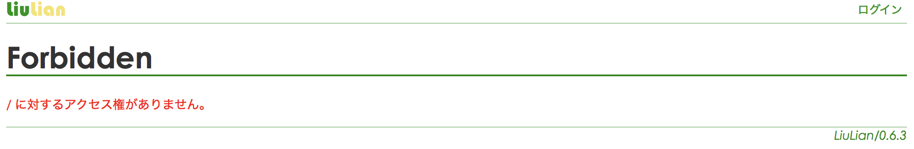

ログインしていない状態でフォルダ画面にアクセスすると以下のようにエラーが表示されます*1。README もしくは index*2というファイルを置くことにより、この動作を変更することができます。

README という LiuLian記法 のファイルを置くことにより、以下のようにファイル一覧を表示することができます。
! Welcome to Liulian とりあえずファイルを置いてみました。
Markdown記法を使いたい場合は README.md というファイル名にして下さい。
index という LiuLian記法 のファイルを置くと、ファイル一覧の代わりにその内容が表示されます。 index.html というHTML形式のファイルでも同様の効果が得られます。 Markdown記法を使う場合は index.md として下さい。